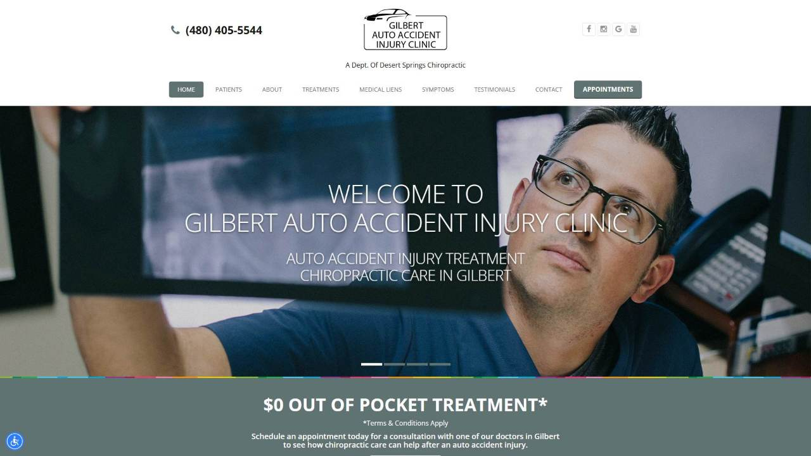
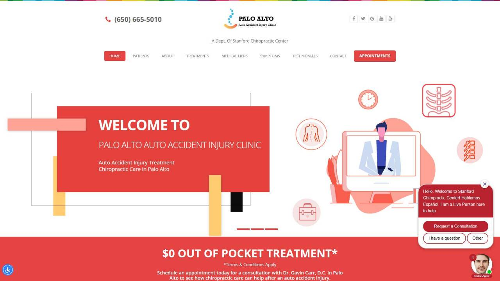
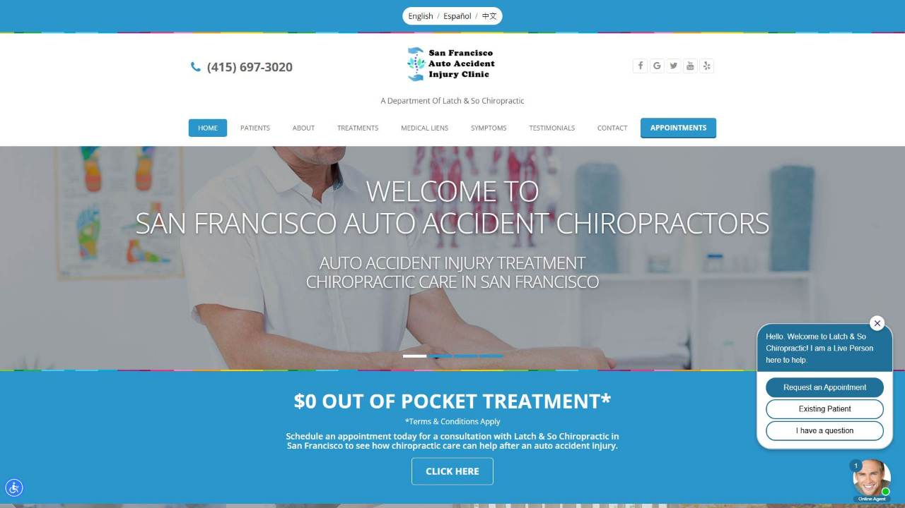

The Case Against
DemandBoost
The charge, in one sentence: that an agency billed 97 chiropractic practices for local search marketing, shipped one production-line website under 12 shared templates, left its own name in the code of 90 of them — and left 82 of the 95 practices measured without a winning share of the one search that fills a schedule: “chiropractor near me.”
SCOPE OF THE RECORD: 97 chiropractic practices · 95 contested-phrase + 36 niche-phrase geo-grid scans · 97 fresh speed tests (phone + desktop) · 83 site audits · 97 homepage captures (desktop + phone) · every figure computed directly from the underlying scan data · map reports hosted independently on localrankingtracker.com
Entered on the docket 2026‑08‑05. Every number above is computed from the scan data behind this file and repeated, row by row, in the full directory of all 97 clients.
Three fates, one roster —
and only one of them is winning
Share of local voice on the contested phrase: of the map points scanned around each practice, the share where it shows in the top three for “chiropractor near me.” Measured practice by practice, across all 95 scanned clients.
| Outcome | What the scan found | Clients | Share | Of the 95 scanned |
|---|---|---|---|---|
| INVISIBLE | zero top-3 appearances for the phrase, anywhere on their own map | 36 | 38% | |
| PARTIAL | visible on fragments of their map, unseen on the rest | 46 | 48% | |
| MARKET WINNER | holds a winning share (50%+) of the phrase on their own map | 13 | 14% |
When nearly an entire roster loses the same phrase the same way, the practices are not the problem. The provider is. Some clients also hold a narrower niche phrase — that appears on their own page as a secondary line, never as the headline.
The maps their clients pay for
are owned by other people
On 87 of the 95 maps scanned, the #1 spot — measured as the share of grid points where a listing ranks first — belongs to someone other than the client paying for marketing. Only 8 clients hold #1 most often on their own map. The top spots concentrate into just 54 competing listings — and one name repeats far beyond any other.
| # | Who holds #1 most often | Client maps led | Scale |
|---|---|---|---|
| 1 | The Joint Chiropractic | 23 | |
| 2 | Lifecare Chiropractic | 3 | |
| 3 | 100% Chiropractic – North Cumming | 2 | |
| 4 | Alexander Chiropractic and Wellness – San Ramon | 2 | |
| 5 | ChiroMarin | 2 | |
| 6 | Power of Touch Chiropractic | 2 | |
| 7 | Russian River Chiropractic | 2 | |
| 8 | Southland Chiropractic Clinic | 2 | |
| 9 | The Source Chiropractic | 2 | |
| 10 | Wellness Chiropractic Dr. Brian Thalhamer, DC & Dr. Ben Spencer DC | 2 | |
| 11 | Young Chiropractic | 2 | |
| — | + 43 more competitors | 1 each |
The monthly invoice is buying visibility on maps someone else owns — and each client’s page in the directory names who owns theirs, with the competitor report to prove it.
The map pack is positions 1–3.
The median client sits at 8.9.
Every scan records the listing’s rank at each point of a geo-grid laid over its own neighborhood, then averages them. The map pack — what a patient actually sees — is positions 1 to 3. Almost nobody in this book is near it.
The pin-by-pin map behind every one of these numbers lives in each client’s own independent report, linked from their page in the directory. Each client’s exact #1-count is on their row.
The one thing they actually build
takes 10.5 seconds to show up
The website is the deliverable every client pays for. Fresh speed tests, run 2026‑08‑04 on 97 of the 97 client sites — each tested twice, as a phone visitor and as a desktop visitor. These are the medians.
| Metric | On a phone | On desktop | What it means |
|---|---|---|---|
| PageSpeed score | 48/100 | 60/100 | Google’s overall performance grade |
| First paint (FCP) | 3.5s | 1.0s | blank screen until anything appears |
| Main content (LCP) | 10.5s | 2.4s | Google’s bar is 2.5s |
That is the product, as delivered, measured the day before this file was assembled. Not one client site was skipped.
Their own stylesheet:
css/demandboost.css
A layperson can verify this in ten seconds: View Source on almost any roster site and search “demandboost.” The agency’s name is baked into the code of the websites its clients pay for.
“© 2026. All Rights Reserved. Personal Injury Marketing by Demand Boost”
These are not 97 independent websites. They are one production line — and the line stamps its maker’s name on the way out.

demandboost.com — the agency’s own homepage · desktop · captured 2026‑08‑05, the same day, the same way, as every client site in this file. It runs template family 01 — the same template as 23 of its clients (Exhibit F).
desertspringschiro.com — one of the 50 client sites loading css/demandboost.css · desktop · captured 2026‑08‑05.
One template, twelve skins,
eighty-three “independent” websites
Same theme, same asset stack, same page skeleton — a different logo on top. Deterministic clustering (same theme, OR asset-path overlap ≥ 0.5, OR DOM-shape match) puts 83 of 97 client sites into 12 multi-site template families. The other 14 run a template no roster site shares.
| Family | Client sites | Fingerprint (shared assets) | Scale |
|---|---|---|---|
| family‑01 + THE AGENCY’S OWN SITE | 23 | static template [js/functions.js, js/jquery.js, js/plugins.js] | |
| family‑02 | 14 | static template [js/bootstrap.js, js/helper-plugins.js, js/init.js] | |
| family‑03 | 12 | static template [js/app.js, theme-icons/style.css, vendor/bootstrap/bootstrap.min.js] | |
| family‑04 | 7 | static template [css/dark.css, css/demandboost.css, css/hover-min.css] | |
| family‑05 | 5 | static template [css/demandboost.css, css/slider.css, fonts/font-awesome/css/font-awesome.min.css] | |
| family‑06 | 5 | static template [css/demandboost.css, css/noticebar.css, css/slider.css] | |
| family‑07 | 5 | static template [js/compressed.js] | |
| family‑08 | 4 | static template [css/theme-animate.css, js/mobile-menu.js, js/theme.js] | |
| family‑09 … family‑12 | 2 each | four more two-site families — fingerprints in the full build | |
| unique | 14 | no other roster site shares their template |
The agency and its clients are literally running the same code, shared css/demandboost.css included.
Entered into evidence below: four “different” practices, one template. All four are members of family‑04 — same asset stack (css/dark.css, css/demandboost.css, css/hover-min.css), captured the same day. The logos change. The website doesn’t.
desertspringschiro.com · family‑04 · desktop · captured 2026‑08‑05

gilbertaccidentinjuryclinic.com · family‑04 · desktop · captured 2026‑08‑05

paloaltoautoaccidentinjury.com · family‑04 · desktop · captured 2026‑08‑05

sfautoaccidentinjury.com · family‑04 · desktop · captured 2026‑08‑05
172 passages, copied word for word,
site after site after site
Sentences from these practices’ own public homepages — visible text only, third-party widget text stripped, whitespace and punctuation normalized. 172 distinct passages of 15+ words appear word-for-word identical on 2 or more different domains. The worst one appears on 18.
6 of the 172 identical passages shown — all 172, with every domain list, in the full build. 6 sites additionally sit in same-copy families where whole pages overlap up to 72% word-for-word.
crusadechiropractic.com — “Chiropractor in Sacramento, CA - $49 New Patient Special!”
dilliardchiropractic.com — “Chiropractor El Cajon CA - $49 New Patient Special!”
drkellywellness.com — “Chiropractor Cupertino | $49 New Patient Special!”
haggardchiro.com — “Chiropractor Litchfield Park | $49 New Patient Special”
Zero titles are exact duplicates — the cities are swapped in. 8 near-identical title formulas cluster across the roster; the copy machine even runs the <title> tags.
Same mistakes, everywhere —
the template ships the defect
Basic on-page defects, measured on every rendered homepage. When the same defect ships on dozens of sites at once, it is not the practice’s mistake. The template ships it — and the agency ships the template.
| Defect | Sites | Share | Scale |
|---|---|---|---|
| More than one main headline (multiple H1) — muddles what the page is about | 38 | 39% | |
| No LocalBusiness schema — the markup that tells Google this is a local practice | 15 | 15% | |
| No H1 heading at all | 11 | 11% | |
| No meta description | 7 | 7% |
family‑02: 14 of 14 sites · family‑04: 7 of 7 · family‑08: 4 of 4 · (family‑05: 4 of 5)
Every member, same defect. That is not 38 practices making the same mistake independently — that is one vendor making it once and photocopying it.
The agency controls the hosting —
and the off switch
One roster domain currently serves an agency suspension notice instead of a website. Two more client domains don’t serve the practice’s website at all. All three captured the same day, the same way, as every other site in this file.
“Website Closed — This ACCOUNT is SUSPENDED — Please contact us […] if you think this is due to an error — www.demandboost.com — Goodbye! © All Rights Reserved.”
When the agency suspends an account, the client’s website is replaced by a suspension notice pointing at demandboost.com. The notice states no reason, and none is inferred here. The agency’s phone number on the notice is redacted in this file.

fairfieldohchiropractor.com · the agency’s suspension notice, as served · desktop · captured 2026‑08‑05
fairfieldohchiropractor.com · the same notice on a phone · captured 2026‑08‑05

alohafamilychiro.com · captured page title: “SBOBET88: Link Resmi Situs Judi Bola Online Agen SBOBET Mix Parlay Asia 2026” — an offshore gambling page, not a chiropractic practice · captured 2026‑08‑05

evergreenchiropractic.com · captured page title: “Plesk Obsidian 18.0.79” — a bare server panel page, not a website · captured 2026‑08‑05
What those two domains serve today — pages unrelated to any practice — is captured and flagged on each client’s own page. No template or copy reading is taken from a page that is not the practice’s, and the practices themselves are blamed for none of it.
84 of 97 practices in this book
have nothing to show for the invoice.
Assemble the exhibits. 90 of 97 sites carry the agency’s name in their own code. 83 of 97 run one of 12 shared templates — the largest of which includes the agency’s own homepage. 172 passages repeat word-for-word across the roster, and even the page titles are mad-libs. The median site takes 10.5 seconds to load on a phone. And the result of all that “marketing”: 82 of the 95 practices measured hold no winning share of “chiropractor near me,” 87 of 95 maps are led by somebody else, and 48 of 95 never rank #1 on a single point of their own grid.
The verdict this record supports: 84 of the 97 practices in this book have no demonstrated win — 82 measured and found without a winning share of the phrase, 2 never measured at all. That is a production line billing 97 practices and delivering for fewer than 15% of them.
And the 13 who do win? They carry themselves. Their median review count is 200 against a scanned-roster median of 49 — reviews earned by their own patients, one visit at a time. That asset belongs to the practice, not the agency, and it moves with the practice. See Exhibit J.
Is your practice
in this file?
All 97 clients, searchable and sortable. Every row shows the share of “chiropractor near me,” average map position, reviews, phone speed and load time — and every scanned practice links to its own independent report with the full pin-by-pin map. “Not measured” means exactly that: no scan yet, no claim made.
Open the directory — all 97 on the recordButton wired to the live client directory in the full build.
Exhibit J The 13 exceptions — under 15% of the book — and who really carries them Tap to open the winners’ table ▾
The only listings in this book holding a winning share (50%+) of the contested phrase on their own map. Note the right-hand column before crediting the agency: 12 of the 13 carry review counts above the scanned-roster median of 49 — median among winners: 200. Those reviews were earned by each practice’s own patients, one visit at a time. That asset belongs to the practice — and it moves with the practice, to any provider.
| # | Listing | Location | Share of the phrase | Patient-earned reviews |
|---|---|---|---|---|
| 1 | Advanced Health Chiropractic | Livermore, CA | 90.1% | 451 |
| 2 | DiSiena Family Chiropractic | Irvine, CA | 82.6% | 370 |
| 3 | Active Chiropractic Care | Commack, NY | 73.6% | 230 |
| 4 | Stanford Chiropractic Center | Palo Alto, CA | 70.3% | 167 |
| 5 | Mark Kimes, DC | Salinas, CA | 69.4% | 200 |
| 6 | Aloha Family Chiropractic | Santa Maria, CA | 66.1% | 34 |
| 7 | Giles Chiropractic | Napa, CA | 66.1% | 181 |
| 8 | Monterey Chiropractic Care | Monterey, CA | 62.0% | 92 |
| 9 | Canyon Chiropractic | San Ramon, CA | 61.2% | 290 |
| 10 | ChiroMarin | Novato, CA | 57.0% | 217 |
| 11 | Back Pain, Neck Pain & Headache Relief Center | Salinas, CA | 56.2% | 650 |
| 12 | Turlock Family Chiropractic | Turlock, CA | 54.6% | 110 |
| 13 | Pacific Pointe Chiropractic | San Clemente, CA | 53.7% | 119 |